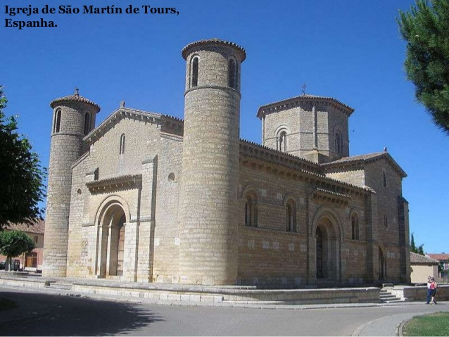
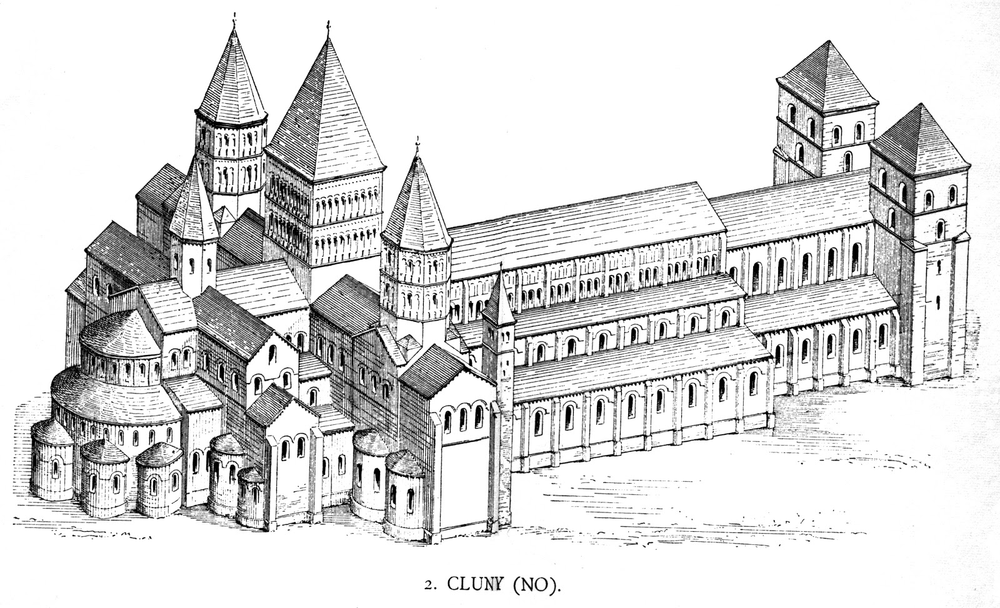
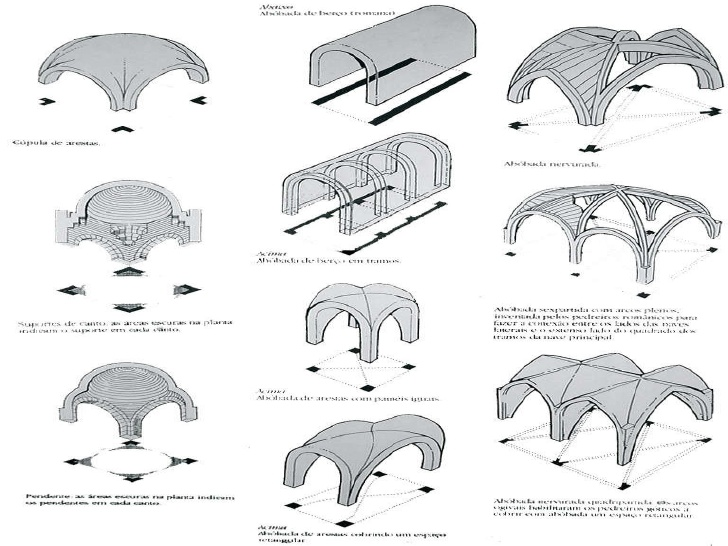

Arquitetura
Características
- Abóbadas em substituição ao telhado
- Pilares maciços e paredes espessas
- Poucas janelas
- Plantas das construções em formato de cruz
Resumo
Graças ao estabelecimento da religião católica romana, diversas igrejas foram construídas na Europa feudal. Essas igrejas seguiam a planta basilical com cruz latina como principal tipo de planta na concepção dessas igrejas. Antes desse período as igrejas eram construídas com telhados de madeira, isso fazia com que, caso ela sofresse algum ataque, ela queimaria muito rapidamente.


